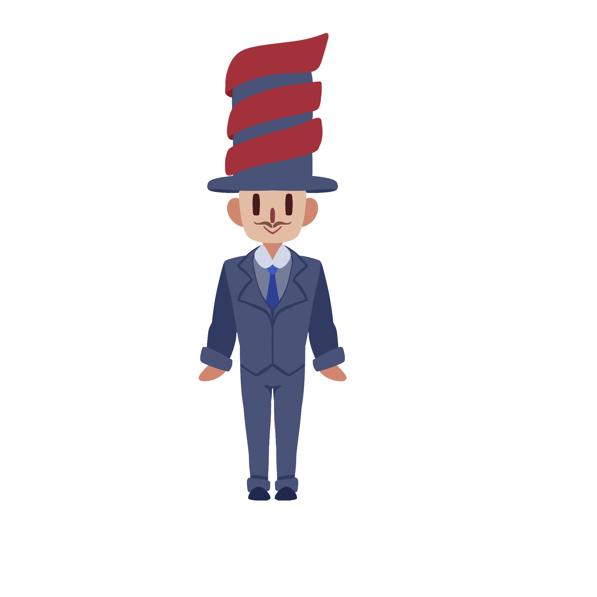

September 28, 2023
These slides can be found at go.epfl.ch/QT-slides.
Their source code: Sporarum/slides-master-project on github.
Implementation PRs: go.epfl.ch/QT-code
Our mascot:
Le type qualifié,
The qualified guy

More precise types, inspired by sets builders: \{x \in \mathbb{Z}\;|\;x > 0\}
type Pos = Int with _ > 0
4: Postype NonEmptyString = String with s => !s.isEmpty
"Nilla Wafer Top Hat Time": NonEmptyStringtype PoliteString = NonEmptyString with s =>
s.head.isUpper &&
s.takeRight(6) == "please"
"Pass me the butter, please": PoliteString:::
def divideQualified(x: Int, y: Int with y != 0):
Int with _ * y == x
def divideContract(x: Int, y: Int): Int = {
require(y != 0)
???
}.ensuring(_ * y == x)Signature and code are mixed: divideContract cannot be
abstract !
type NonZero = Int with y != 0
def divideQualified(x: Int, y: NonZero):
Int with _ * y == xdef nonZero(y: Int) = y != 0
def divideContract(x: Int, y: Int): Int = {
require(nonZero(y))
???
}.ensuring(_ * y == x)Still need to add a require and refer to
y
def smallest[T](l: List[T]): T
def smallestPos(l: List[Pos]) = smallest(l)def smallestPosContract(l: List[Int]): Int = {
require(l.forall(_ > 0))
???
}.ensuring(_ > 0)Looks like:
type Pos = Int with _ > 0Behaves like contracts
Powerful thanks to polymorphism
Main phases:
Trying to make qualified types approachable:
Even without a solver, that’s already enough for some applications !
type NonEmptyString = String with s => !s.isEmptyElements:
String)s)!s.isEmpty)Internal representation:
String @qualified[String]((s: String) => !s.isEmpty)Boolean expressions:
type Trivial = Int with true
type Empty = Int with falseAvailable identifiers:
def foo(x: Int with x > 0, y: Int with y > x): Int = y - ximport scala.language.experimental.postfixLambda
type Pos = Int with x => x > 0
// or
type Pos = Int with _ > 0
type Digit = Int with x => 0 <= x && x < 10type IncreasingPair = (Int, Int) with _ < _
// desugared
type IncreasingPair = (Int, Int) with (x, y) => x < y
// untupled to
type IncreasingPair = (Int, Int) with p => p._1 < p._2(Int with x => x > 0) => (Int with y => y < 0) => Intval f = x => x > 0
type Valid = Int with x => x > 0type Invalid = Int with f
// desugars to
type Invalid = Int with x => fInspired by math \{x \in \mathbb{Z}\;|\;x
> 0\}
And other programming languages
{v:Int | v > 0}
import scala.language.experimental.setNotation
type Pos = {x: Int with x > 0}
type Digit = {x: Int with 0 <= x && x < 10}(x: Int) => x.type(x: Int with x > 0) => x.type{x: Int with x > 0} => x.typeitSimple idea: a more legible _ that you can repeat
type Pos = Int with it > 0
type Digit = Int with 0 <= it && it < 10(Int with it > 0) => (Int with it < 0) => Int(x: Int with x > 0) => Int with x > 0
Int with it > 0 => Int with x > 0
it may be nestedtype Outer = Int with
type Smaller = Int with it < it?
???it is actually finetype Outer = Int with
type Smaller = Int with it < super.it
???idDifferent simple idea: identifiers for any type
type Function = (x: Int) => x.type
type Alias = (x: Int)type Pos = (x: (y: Int) with y > 0)type Pos = (x: Int with x > 0)
type Digit = (x: Int with 0 <= x && x < 10)it & idThey are compatible, and can even be translated one into the other:
id to it:
type Pos = (x: Int with x > 0)
// transformed into
type Pos = (x: (Int with it > 0))it to id:
type Pos = Int with it > 0
// transformed into
type Pos = (it$1: Int) with it$1 > 0Type test:
x.isInstanceOf[T] // Boolean
Cast:
x.asInstanceOf[T] // Tx.isInstanceOf[Int with _ > 0]
// after erasure
x.isInstanceOf[Int] && x > 0… won’t work:
{println("❤️");}.isInstanceOf[Int with _ > 0]
// after erasure
{println("❤️");}.isInstanceOf[Int] && ({println("❤️");} > 0){println("❤️");}.isInstanceOf[Int with _ > 0]
// after erasure
val fresh1 = {println("❤️");}fresh1.isInstanceOf[Int] && {
val fresh2 = fresh1.asInstanceOf[Int]
fresh2 > 0
}def transformTypeTest(expr: Tree, testType: Type, ...): Tree =
testType.dealiasKeepQualifyingAnnots match {
...
case refine.EventuallyQualifiedType(baseType,
closureDef(qualifier: DefDef)) =>
evalOnce(expr) { e =>
transformTypeTest(e, baseType, flagUnrelated).and(
BetaReduce(qualifier, List(List(e.asInstance(baseType)))))
}
...costlyCall() match
case i: Int if i > 0 =>
i + 1val x = costlyCall()
if x.isInstanceOf[Int] && {
val i = x.asInstanceOf[Int]
i > 0
} then
val i = x.asInstanceOf[Int]
i + 1
else
throw new MatchError(x)
This slide intentionally left blank
case y: Int if
0 <= y && y < 10 =>if x.isInstanceOf[Int] && {
val y = x.asInstanceOf[Int]
0 <= y && y < 10
} then ...case y: Int with
0 <= y && y < 10 =>if x.isInstanceOf[Int with y =>
0 <= y && y < 10]
then ...if x.isInstanceOf[Int] && {
val y = x.asInstanceOf[Int]
0 <= y && y < 10
} then ...def answerRequest(x: Any): Either[String, String] =
x match
case s: PoliteString => Right("Of course !")
case _ => Left("Please be polite ...")type NonEmptyString = String with s => !s.isEmpty
type PoliteString = NonEmptyString with s => s.head.isUpper &&
s.takeRight(6) == "please"def answerRequest(x: Object): scala.util.Either =
if
x1.isInstanceOf[String] &&
{
val _$1: String = x1.asInstanceOf[String]
!(_$1.isEmpty)
} &&
{
val s: String = x1.asInstanceOf[String]
s.head.isUpper &&
s.takeRight(6) == "please"
}
then
val s: String = x1.asInstanceOf[String]
return Right("Of course !")
return Left("Please be polite ...")If it quacks like a pattern guard, why not make it look like one:
type Pos = Int if it > 0x match
case (x: Int) if x > 0 =>
case x: (Int if x > 0) =>Flow typing for free !
type Nat = Int with _ >= 0
def log(x: Nat): Int = ???def logUnsafe(x: Int) =
log(x) // errordef logSafe(x: Int) = x match
case x: Nat => Some(log(x))
case _ => NoneInt with _ > 0{x: Int with x > 0}it:
Int with it > 0id:
(x: Int) with x > 0if as keywordFuture work: Solver
Works for both syntaxes:
case class LongitudeAndLatitudeValues(
latitude: Double with -90 <= latitude && latitude <= 90,
longitude: Double with -180 <= longitude && longitude <= 180,
city: String with raw"^[A-Za-z . ,'-]+$$".r.matches(city)
) extends Objtype Shape = List[Int with _ > 0]
extension (s: Shape)
def nbrElems = s.fold(1)(_ * _)
def reduce(axes: List[Int with x => s.indices.contains(x)]) = s.zipWithIndex.filter((_, i) => axes.contains(i)).map(_._1)trait Tensor[T]:
val shape: Shape
def sameShape(t: Tensor[T]): Boolean = ???
def add(t: Tensor[T] with t.sameShape(this)):
Tensor[T] with _.sameShape(this)
def mean(axes: List[Int with x => shape.indices.contains(x)]):
Tensor[T] with _.shape == shape.reduce(axes)
def reshape(newShape: Shape with newShape.nbrElems == shape.nbrElems):
Tensor[T] with _.shape == newShapetype Shape = List[{x: Int with x > 0}]
extension (s: Shape)
def nbrElems = s.fold(1)(_ * _)
def reduce(axes: List[{x: Int with s.indices.contains(x)}]) = s.zipWithIndex.filter((_, i) => axes.contains(i)).map(_._1)trait Tensor[T]:
val shape: Shape
def sameShape(t: Tensor[T]): Boolean = ???
def add(t: Tensor[T] with t.sameShape(this)):
{res: Tensor[T] with res.sameShape(this)}
def mean(axes: List[{x: Int with shape.indices.contains(x)}]):
{res: Tensor[T] with res.shape == shape.reduce(axes)}
def reshape(newShape: Shape with newShape.nbrElems == shape.nbrElems):
{res: Tensor[T] with res.shape == newShape}def f(x: Any) = "f1"
def f(x: Pos) = "f2"
f(-1)During typing: Pos =:= Int, f1 gets
chosen
During QualChecking: Pos < Int, and type mismatch
But f2 would have been fine !
type Pos = Int with x > 0
object Extractor:
def unapply(x: Pos): Some[Pos] = Some(x)
-1 match
case Extractor(x) => x
case _ => None // warning: unreachable caseit and de Bruijn indices\lambda f.\:\lambda g.\:\lambda x.\:f (g x)
\lambda\:\lambda\:\lambda\:3\:(2\:1)
... with ...
... with ...
... with ...
super.super.it( super.it( it ) )But please don’t do that